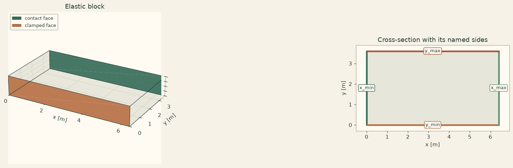

Docs › Examples › Hertz line contact of a cylinder on an elastic block
Contact mechanics · 2D
Hertz line contact of a cylinder on an elastic block
A rigid cylinder pressed into an elastic block, graded against the Hertz pressure distribution for the transmitted force.

What it computes
OneSimulation solves the plane-strain contact with a mortar formulation on two quad meshes and compares the contact pressure with the Hertz ellipse. The geometry is read from a STEP file with named faces; the script that builds it comes with the notebook.
What it checks
Peak pressure within 0.7 % and half-width within 1 % on the fine mesh; the pointwise pressure RMS is about 5 % there and 17 % on the coarse mesh.
Geometry
The notebook starts at the import of the CAD file hertz_line_contact.step: STEP (AP242), readable by any CAD program, with the names of the faces that the boundary conditions use. Put it next to the notebook.

The geometry script
The script hertz_line_contact_geometry.py builds the geometry with the CAD objects of OneSimulation and writes the file. Change a dimension there, run it, and run the notebook again.
"""Geometry of the OneSimulation example "Hertz line contact".
Builds the elastic block, 6.4 wide, 3.6 deep and 1 thick (dimensionless units), with the CAD
objects of OneSimulation and writes hertz_line_contact.step. The faces keep their names x_min,
x_max, y_min, y_max, z_min and z_max in the file; the example computes on the cross-section z = 0.5.
"""
from onesim.cad.d3 import Box
block = Box(length=6.4, width=3.6, height=1.0)
block.save("hertz_line_contact.step")The notebook
The complete notebook, cell by cell. Run it to produce the figures and the comparison printout.
A long rigid cylinder of radius \(R\) is pressed into a linear-elastic block (Young's modulus \(E\), Poisson's ratio \(\nu\)) in plane strain. Hertz's theory for the elastic half-space predicts that a force per unit length \(F\) is transmitted through a strip of half-width \(b\) with a semi-elliptical pressure distribution,
The block comes from the CAD file hertz_line_contact.step, written by hertz_line_contact_geometry.py with the CAD objects of OneSimulation. The plane-strain model lives on its cross-section, which keeps the face names x_min, x_max, y_min and y_max.
In plane strain the force-approach relation depends on the depth of the block, but the pressure distribution is set by the local geometry alone. The comparison therefore takes the force \(F\) transmitted in the simulation and checks the half-width, the peak pressure and the elliptical profile that Hertz predicts for that force.
OneSimulation treats the contact with its mortar formulation: Lagrange multipliers on the contact trace enforce non-penetration weakly against the rigid cylinder profile.
import numpy as np
from onesim.cad.d2 import Circle
from onesim.cad.exchange import load
from onesim.meshing import cartesian
from onesim.physics.solid_mechanics import (
MortarBody,
MortarContact,
SmallStrainSolid,
rigid_gap,
)
from onesim.visualization import plots, theme
theme.set()Geometry
load returns the solid; section cuts it at half thickness and returns the planar region.
solid = load("hertz_line_contact.step")
block = solid.section((0, 0, 1), origin=(0, 0, 0.5))
faces = block.boundaries
width, depth = block.size[:2]
fig = plots.figure(1, 2, size=(13, 4.5))
plots.geometry(
solid,
selection={
"contact face": solid.boundaries.y_max,
"clamped face": solid.boundaries.y_min,
},
labels=False,
title="Elastic block",
ax=fig[0],
)
plots.geometry(block, title="Cross-section with its named sides", ax=fig[1])
plots.show()Model
A soft block in dimensionless units. The bottom is clamped, the side walls are traction free and the top is the mortar contact trace against the rigid cylinder; the approach is imposed through the normal offset of the rigid profile. Two meshes of bilinear quadrilaterals are solved.
youngs_modulus, poisson_ratio, radius, indentation = 2600.0, 0.27, 8.0, 0.032
contact_modulus = youngs_modulus / (1 - poisson_ratio**2)
cylinder = rigid_gap(
Circle(radius=radius, origin=(width / 2, depth + radius, 0.0)), (0.0, 1.0)
)
steel = SmallStrainSolid(
youngs_modulus=youngs_modulus,
poisson_ratio=poisson_ratio,
kinematics="plane_strain",
)
def solve(cells):
"""Contact pressure on a mesh with `cells` quadrilaterals across the block."""
mesh = cartesian(
geometry=block, shape=(cells, cells // 3), extents=(width, depth)
).build()
body = MortarBody(
solid=steel,
mesh=mesh,
boundary=faces.y_max,
displacements=((faces.y_min, "x", 0.0), (faces.y_min, "y", 0.0)),
tractions=((faces.x_min, (0.0, 0.0)), (faces.x_max, (0.0, 0.0))),
)
return MortarContact(slave=body, normal=(0.0, -1.0), rigid_gap=cylinder).solve(
times=(0.0,), normal_offset=-indentation
)
runs = {cells: solve(cells) for cells in (96, 192)}Comparison with Hertz
For the force transmitted on each mesh: Hertz half-width and peak pressure, and the deviation of the computed peak, of the half-width (from the second moment of the pressure) and of the profile.
profiles = {}
for cells, result in runs.items():
pressure, measure = result.normal_pressure[-1], result.multiplier_measures
x = result.multiplier_coordinates[:, 0] - width / 2
force = measure @ pressure
half_width = np.sqrt(4 * force * radius / (np.pi * contact_modulus))
peak = 2 * force / (np.pi * half_width)
hertz = peak * np.sqrt(np.maximum(0.0, 1 - (x / half_width) ** 2))
profiles[cells] = (x, pressure, half_width, peak)
print(
f"{cells} x {cells // 3} cells: force {force:.3f}, Hertz half-width {half_width:.4f}, peak pressure {peak:.3f}; "
f"peak {100 * (pressure.max() / peak - 1):+.1f} %, "
f"half-width {100 * (2 * np.sqrt(measure @ (pressure * x**2) / force) / half_width - 1):+.1f} %, "
f"profile (RMS) {100 * np.sqrt(measure @ (pressure - hertz) ** 2 / (measure @ hertz**2)):.1f} %"
)Figure
x, pressure, half_width, peak = profiles[192]
ellipse = np.linspace(-1.3 * half_width, 1.3 * half_width, 400)
plots.line(
points={
f"simulation, {cells} x {cells // 3} cells": (
p[0][np.abs(p[0]) < 1.3 * half_width],
p[1][np.abs(p[0]) < 1.3 * half_width],
)
for cells, p in profiles.items()
},
reference={
"Hertz ellipse for the transmitted force": (
ellipse,
peak * np.sqrt(np.maximum(0.0, 1 - (ellipse / half_width) ** 2)),
)
},
xlabel="position along the surface x",
ylabel="contact pressure p",
title="Contact pressure under the cylinder",
)
plots.show()Going further
Change the block in hertz_line_contact_geometry.py and write the STEP file again: a shallower block changes the approach but not the pressure ellipse. Replace the rigid profile by a second elastic body (master=), or add a tangential load with friction_coefficient to study Coulomb stick-slip under the Hertz pressure.